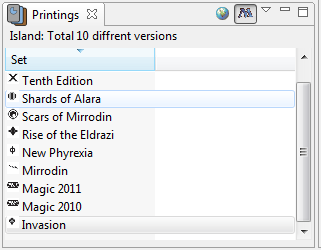
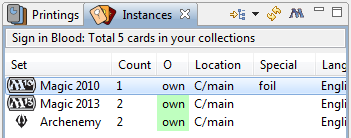

Views
"MTG Database" view show all available cards. By default local database
of cards contains only latest print of a card with the same name.
Default database contains sets only up to the last public set that was
released prior to the software release. You can update local database
with specific set or with "Standard" format sets. See
Update Magic Database.
MTG Database View specific context menu actions:
- Filter... - opens a Filter
Dialog
- Copy - copy card to clipboard
- Add to Active Deck/Collection (hotkey + or =) - menu to move
card to active collection (or deck). Active collection is the
collection that was active last time
- Add to - add card to selected deck/collection. Collection
must be open to show up in the menu.
- Show Other Sets - for selected card show if this is printed
in other sets, opens the Printings view

- Cards Table - see Cards Table
reference.
- Status Bar - shows information about current card table.
- Search Bar (Optional) - see Search.
- Tool Bar
-
(Open Filter) - opens a Filter
dialog.
 (View Menu)
(View Menu)
- Filter... - opens a Filter
Dialog
- "Group By" menu
- None - no grouping
- Cost - to group cards by converted mana cost
- Color - to group cards by color name
- Type - to group cards by type
- "Preferences..." - opens this view preferences.
- "Find..." - opens a search
bar.
- "Sort By" - sorts by specific column
- "Load Extra Fields..." - loads fields of selected cards
from internet (such as prices, rulings, extra languages).
Cards table is a table (or table tree) that show cards for current
view. It provides the following actions:
Select a row - show card description in Card
Info view.
Hover over a cell - show a tooltip - full text of the cell if
cell is to small to show it (ex. Description column).
Click on column header - sort by column, click again on the
same column header to change direction of a sort
Click inside a cell - bring up cell editor (if applicable, ex.
Count column)
This is a list of all possible columns:
- Name - name of the card
- Id - id of the card (gatherer id)
- Cost - cost images and converted cast cost (sorts by CCC)
- Type - type of card
- P - power for creatures
- T - toughness for creatures and for planeswalkers
- Rarity - card rarity
- Set - card set
- Oracle text - text of card (oracle variant)
- Color - card color determined by casting cost
- Color type - mono, multi or hybrid
- Seller Price - price of single card from selected MTG seller
These only available in Deck and My Cards view:
- Count - Card count
- Location - Card location: Deck or Collection path
- Comment - card comment
- Price - personal price per card
My Cards View
My Cards View shows cards from all your decks or collections (or from
selected ones). To control which collections are shown you can use
Location page of the view's
Filter. For the list of view components (menus, card table, status bar)
see
MTG Database view.
You can open "My Cards" view by double-clicking on one of the
collections or containers from
Card Navigator view.
Context menu actions:
- Filter... - opens a Filter
Dialog
- Delete - delete a cards pile (one row which usually groups
cards with the same name)
- Copy - copy card to clipboard
- Paste - paste card from clipboard
- Move to - menu to move card to selected collection/deck.
Collection must be opened to show up in this menu.
- Split pile... - split cards in pile (cards with the same
name) into 2 piles (opens a dialog that allow to select number of
cards in each)
- Edit Card... - edit card properties, note: card count can be
edited right in the cell
Collector
Collector view is oriented to people who collecting magic cards and
shows overall completion of collection for each set and what cards are
missing. Collector view has same context menu actions as My Cards view.
It has different grouping options oriented on set and languages.
Deck View
Deck view shows cards from a specific deck. To open a Deck view
double-click on a deck from
Card Navigator view. To close a Deck view
click on "X" icon near the view header.
For the list of view components (menus, card table, status bar) see
MTG Database view.
Context menu actions:
- Filter... - opens a Filter
Dialog
- Delete - delete a card pile
- Increase (hotkey + or =) - increase count of the cards for
selected card piles
- Decrease (hotkey -) - decrease count of the cards for
selected card piles
- Copy - copy card to clipboard
- Paste - paste card from clipboard
- Move to - menu to move card to selected collection/deck.
Collection must be opened to show up in this menu.
- Split pile... - split cards in pile (cards with the same
name) into 2 piles
- Edit Card... - edit card properties, note: card count can be
edited right in the cell
You can drag cards from and to Deck view. Dragging a card from a Deck
view to another deck or collection will move the card. Dragging a card
from MTG Database view to a Deck view will add 1 card to the deck.
You can change number of cards of the same name by editing Count cell
or edit multiple cards by selecting them and using "Edit..." from
context menu.
Deck view also has Mana Curve tab - to show mana curve, Card Types type
- to show chart of type distribution and types info, Colors - to show
chart of colors distribution for spells, and Info tab where you can
edit deck description.
To try what hands you can get with this deck you can run command
"Emulate Draw" from the view menu (triangle icon).
Card Info View
Card Info view shows details of the card selected in one of the cards
views (MTG Database, My Cards or Deck). It loads a card image from
"gatherer" site, and caches it in the workspace.
You can turn off card caching from
Preferences in the Magic Preferences
page. If you need to use proxy you can set it up proxy settings from
Preferences->General->Network Connections.
If image is not loaded or image quality is not acceptable card
information is duplicated as a text below the image.
To load card information into Card Info view select a card (single
click) from any other views that shows cards list.
Card Navigator View
Card navigator allows you to create a structure to organise your cards.
You can create arbitrary structures to organise you collections and
decks.
To add new elements in the structure you can use view context menu
(right click) or main File menu, see details in
New Menu.
To delete an element use context menu "Delete". Select an element,
right-click on it and select menu item "Delete".
To rename an element use context menu "Rename". Select an element,
right-click on it and select menu item "Rename".
You can also Export and Import deck/collections from this view.
Printings View
Printings view shows all sets in which selected card was
printed (which is known to local database), for example land such as
Island would be listed at least four times for each core set in this
view. Card in other languages won't be listed by default, until you extend database with
printings in a specific language.

The globe looking button is "Update printings from the web", it
will synchronize local database copy with gatherer database for
selected card.
Instances View
Shows instances of selected card available in
your collections real or virtual (columns are "Set", "Ownership", "Count",
"Location", "Special", "Comment" and "For Trade Count"). Columns can be dragged around and resized.
You can drag cards from this view to deck/collection.
It will move a card pile to another collection, unless you "copy" drag (which is usually
ctrl+drag). Note that copying real cards is protected operation and not permitted unless you override it in setting.

To open Printings view for the same card press "M" looking button.